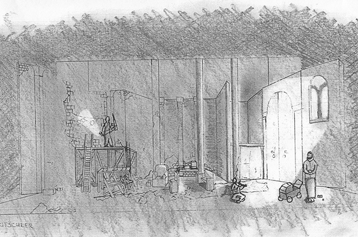

An understanding of scope and space are incredibly important across all aspects of design. This drafting, created with a perspective grid, this type of drawing allows for a glimpse of the final product before committing to the more intensive parts of the design process.